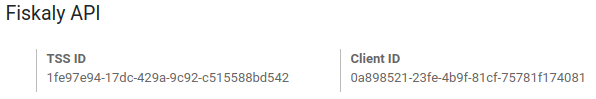

ประเทศเยอรมันนี¶
ผังบัญชีประเทศเยอรมัน¶
Odoo รองรับผังบัญชี SKR03 และ SKR04 ทั้งคู่ คุณสามารถเลือกสิ่งที่คุณต้องการได้โดยไปที่ จากนั้นเลือกแพ็คเกจที่คุณต้องการในส่วนการประยุกต์ใช้ทางการเงิน
ระวัง คุณสามารถเปลี่ยนแพ็คเกจระบบบัญชีได้ตราบเท่าที่คุณยังไม่ได้สร้างรายการบัญชีใดๆ
Tip
เมื่อคุณสร้างฐานข้อมูล Odoo Online ใหม่ SKR03 จะถูกติดตั้งตามค่าเริ่มต้น
รายงานทางบัญชีประเทศเยอรมัน¶
นี่คือรายการรายงานเฉพาะสำหรับประเทศเยอรมันที่มีอยู่บน Odoo Enterprise:
งบดุล
กำไร & ขาดทุน
รายงานภาษี (Umsatzsteuervoranmeldung)
VAT ภายในของคู่ค้า
ส่งออกจาก Odoo ไปยัง Datev¶
คุณสามารถส่งออกรายการบัญชีของคุณจาก Odoo ไปยัง Datev ได้ เพื่อให้สามารถใช้ฟีเจอร์นี้ได้ จำเป็นต้องติดตั้งการประยุกต์ใช้ทางบัญชีสำหรับประเทศเยอรมันในฐานข้อมูล Odoo Enterprise ของคุณ จากนั้นคุณสามารถเข้าไปที่ จากนั้นคลิกที่ปุ่ม ส่งออก Datev (csv)
ระบบขายหน้าร้านในประเทศเยอรมนี: ระบบรักษาความปลอดภัยทางเทคนิค¶
Kassensicherungsverordnung (กฎหมายว่าด้วยการป้องกันการจัดการบันทึกดิจิทัล) กำหนดให้ระบบการเก็บบันทึกทางอิเล็กทรอนิกส์ - รวมถึงระบบ ระบบขายหน้าร้าน - จะต้องติดตั้ง ระบบรักษาความปลอดภัยทางเทคนิค (หรือที่เรียกว่า TSS หรือ TSE)
Odoo นำเสนอบริการที่สอดคล้องกับความช่วยเหลือของ fiskaly ซึ่งเป็น โซลูชันบนคลาวด์
Important
เนื่องจากโซลูชันนี้เป็นระบบคลาวด์ จึงจำเป็นต้องมีการเชื่อมต่ออินเทอร์เน็ตที่ใช้งานได้
Note
fiskaly เป็นผู้กำหนดอัตราภาษีมูลค่าเพิ่มเพียงอัตราเดียว คุณสามารถตรวจสอบอัตราเหล่านี้ได้โดยปรึกษา: fiskaly DSFinV-K API: คำจำกัดความภาษีมูลค่าเพิ่ม
การกำหนดค่า¶
การติดตั้งโมดูล¶
หากฐานข้อมูลของคุณถูกสร้างขึ้นก่อนเดือน มิถุนายน 2021 อัปเกรด แอป ระบบขายหน้าร้าน ของคุณ (
point_of_sale) และโมดูล ร้านอาหาร (pos_restaurant)ติดตั้ง โมดูล ประเทศเยอรมนี - การรับรองสำหรับระบบขายหน้าร้าน (
l10n_de_pos_cert) และ ประเทศเยอรมนี - การรับรองสำหรับระบบขายหน้าร้านประเภทร้านอาหาร (l10n_de_pos_res_cert)Tip
หากไม่มีโมดูลเหล่านี้อยู่ในรายการ อัปเดตรายการแอป

ลงทะเบียนบริษัทของคุณที่หน่วยงานทางการเงิน¶
หากต้องการจดทะเบียนบริษัทของคุณ ให้ไปที่ กรอกข้อมูลในช่องต่อไปนี้แล้ว บันทึก
ชื่อบริษัท
**ที่อยู่**ที่ถูกต้อง
หมายเลข ภาษี
St.-Nr (Steuernummer): สำนักงานสรรพากรกำหนดหมายเลขนี้ให้กับบุคคลธรรมดาหรือนิติบุคคลที่ต้องเสียภาษีทุกคน (เช่น
2893081508152)W-IdNr (Wirtschafts-Identifikationsnummer): หมายเลขนี้ใช้เป็นหมายเลขประจำตัวถาวรสำหรับบุคคลที่กระตือรือร้นทางเศรษฐกิจ
จากนั้น คุณสามารถ จดทะเบียนบริษัทของคุณผ่าน fiskaly ได้โดยเปิดแท็บ fiskaly และคลิกที่ปุ่ม การลงทะเบียน fiskaly

Tip
หากคุณไม่เห็นปุ่ม การลงทะเบียน fiskaly ตรวจสอบให้แน่ใจว่าคุณ บันทึก รายละเอียดบริษัทของคุณและไม่ได้อยู่ใน โหมดแก้ไข อีกต่อไป
เมื่อการลงทะเบียนเสร็จสิ้น ฟิลด์ใหม่จะปรากฏขึ้น:
รหัสองค์กร fiskaly หมายถึงรหัสของบริษัทของคุณที่ฝั่ง fiskaly
คีย์ fiskaly API และ ความลับ คือข้อมูลประจำตัวที่ระบบใช้ในการเข้าถึงบริการที่นำเสนอโดย fiskaly

Note
สามารถขอข้อมูลประจำตัวใหม่ได้หากมีปัญหากับข้อมูลปัจจุบัน
สร้างและเชื่อมโยงระบบความปลอดภัยทางเทคนิคกับ PoS ของคุณ¶

หากต้องการใช้ระบบขายหน้าร้านในประเทศเยอรมนี คุณต้องสร้าง TSS ก่อน
โดยไปที่ เปิดระบบขายหน้าร้านที่คุณต้องการแก้ไข จากนั้นทำเครื่องหมายที่ช่องถัดจาก สร้าง TSS และ *บันทึก *
เมื่อสร้าง TSS สำเร็จแล้ว คุณจะพบ TSS ID และ Client ID ของคุณได้ใต้ส่วน fiskaly API
TSS ID หมายถึง ID ของ TSS ของคุณที่ฝั่ง fiskaly
Client ID หมายถึง PoS ของคุณ แต่อยู่ที่ฝั่ง fiskaly
DSFinV-K¶

เมื่อใดก็ตามที่คุณปิดเซสชัน PoS รายละเอียดคำสั่งซื้อจะถูกส่งไปยังบริการ DSFinV-K ของ fiskaly
ในกรณีของการตรวจสอบ คุณสามารถส่งออกข้อมูลที่ส่งไปยัง DSFinV-K ได้โดยไปที่
ฟิลด์เหล่านี้เป็นฟิลด์บังคับ:
ชื่อ
วันที่เริ่มต้น (ส่งออกข้อมูลที่มีวันที่มากกว่าหรือเท่ากับวันที่เริ่มต้นที่กำหนด)
วันที่สิ้นสุด (ส่งออกข้อมูลที่มีวันที่น้อยกว่าหรือเท่ากับวันที่สิ้นสุดที่กำหนด)
ปล่อยช่อง ระบบขายหน้าร้าน ว่างไว้ หากคุณต้องการส่งออกข้อมูลระบบขายหน้าร้านทั้งหมด ระบุระบบขายหน้าร้าน หากคุณต้องการส่งออกข้อมูล PoS เฉพาะนี้เท่านั้น
การสร้างการส่งออก DSFinV-K จะเริ่มต้นการส่งออกที่ฝั่งของ fiskaly

อย่างที่คุณเห็น สถานะ อยู่ระหว่าง รอดำเนินการ ซึ่งหมายความว่าการส่งออกได้รับการทริกเกอร์เรียบร้อยแล้วและกำลังดำเนินการอยู่ คุณต้องคลิก สถานะรีเฟรช เพื่อตรวจสอบว่าพร้อมหรือไม่
มาตรฐานการบัญชีภาษีของประเทศเยอรมนี: คู่มือ Odoo เกี่ยวกับการปฏิบัติตาม GoBD¶
GoBD stands for Grundsätze zur ordnungsmäßigen Führung und Aufbewahrung von Büchern, Aufzeichnungen und Unterlagen in elektronischer Form sowie zum Datenzugriff. In short, it is a guideline for the proper management and storage of books, records, and documents in electronic form, as well as for data access, that is relevant for the German tax authority, tax declaration, and balance sheet.
หลักการเหล่านี้เขียนและเผยแพร่โดยกระทรวงการคลังของรัฐและจังหวัด (BMF) ในเดือน พฤศจิกายน 2557 ตั้งแต่เดือนมกราคม 2558 หลักการเหล่านี้ได้กลายเป็นบรรทัดฐาน และแทนที่หลักปฏิบัติที่ได้รับการยอมรับก่อนหน้านี้ซึ่งเชื่อมโยงกับระบบบัญชีที่ใช้คอมพิวเตอร์ BMF มีการเปลี่ยนแปลงหลายประการในปี 2562 และมกราคม 2563 เพื่อระบุเนื้อหาบางส่วนและเนื่องมาจากการพัฒนาโซลูชันดิจิทัล (โฮสติ้งบนคลาวด์ บริษัทที่ไร้กระดาษ ฯลฯ)
Important
Odoo ให้ ช่องทางในการปฏิบัติตาม GoBD กับคุณ
คุณต้องรู้อะไรบ้างเกี่ยวกับ GoBD เมื่อต้องใช้ซอฟต์แวร์ระบบบัญชี¶
Note
If you can, the best way to understand GoBD is to Read the Official GoBD text. It is a bit long but quite readable for non-experts. But in short, here is what to expect:
GoBD มีผลผูกพันกับบริษัทที่ต้องแสดงบัญชี ซึ่งรวมถึง SMEs ฟรีแลนซ์ และผู้ประกอบการ ต่อหน่วยงานทางการเงิน ด้วยเหตุนี้ ผู้เสียภาษีเองเป็นผู้รับผิดชอบแต่เพียงผู้เดียว ในการเก็บรักษาข้อมูลที่เกี่ยวข้องกับการเงินให้ครบถ้วนและครบถ้วนสมบูรณ์ (ข้อมูลทางการเงินและข้อมูลที่เกี่ยวข้องตามที่กล่าวไว้ข้างต้น)
นอกเหนือจากข้อกำหนดของซอฟต์แวร์แล้ว ผู้ใช้ยังต้องมั่นใจในระบบควบคุมภายใน (ตามมาตรา 146 ของรหัสการเงิน):
การควบคุมสิทธิ์การเข้าถึง;
การแบ่งแยกหน้าที่ การแยกหน้าที่;
การควบคุมรายการ (การแจ้งเตือนข้อผิดพลาด การตรวจสอบความน่าเชื่อถือ);
การตรวจสอบการกระทบยอดเมื่อป้อนข้อมูล;
การควบคุมการประมวลผล;
มาตรการป้องกันการบิดเบือนซอฟต์แวร์ ข้อมูล หรือเอกสารโดยเจตนาหรือไม่ตั้งใจ
ผู้ใช้จะต้องกระจายงานภายในองค์กรไปยังตำแหน่งที่เกี่ยวข้อง (การควบคุม) และตรวจสอบว่างานได้รับการปฏิบัติอย่างถูกต้องและครบถ้วน (การควบคุมดูแล) จะต้องบันทึกผลลัพธ์ของการควบคุมเหล่านี้ (เอกสารประกอบ) และหากพบข้อผิดพลาดระหว่างการควบคุมเหล่านี้ ควรใช้มาตรการที่เหมาะสมเพื่อแก้ไขสถานการณ์ (การป้องกัน)
ความปลอดภัยของข้อมูลล่ะ?¶
ผู้เสียภาษีจะต้องรักษาความปลอดภัยระบบไม่ให้ข้อมูลสูญหายอันเนื่องมาจากการลบ ลบออก หรือถูกขโมยข้อมูลใดๆ หากรายการมีความปลอดภัยไม่เพียงพอ การทำบัญชีจะถือว่าไม่เป็นไปตามหลักเกณฑ์ของ GoBD
เมื่อโพสต์การจองแล้ว จะไม่สามารถเปลี่ยนแปลงหรือลบผ่านแอปพลิเคชันได้อีกต่อไป
หากใช้ Odoo ในระบบคลาวด์ การสำรองข้อมูลปกติจะเป็นส่วนหนึ่งของบริการ Odoo Online นอกจากนี้ยังสามารถดาวน์โหลดและสำรองข้อมูลบนระบบภายนอกได้อีกด้วย
หากเซิร์ฟเวอร์ดำเนินการภายในเครื่อง ผู้ใช้จะต้องรับผิดชอบในการสร้างโครงสร้างพื้นฐานการสำรองข้อมูลที่จำเป็น
Important
ในบางกรณี ข้อมูลจะต้องถูกเก็บไว้เป็นเวลาสิบปีหรือมากกว่านั้น ดังนั้นควรสำรองข้อมูลไว้เสมอ จะมีความสำคัญมากยิ่งขึ้นหากคุณตัดสินใจเปลี่ยนผู้ให้บริการซอฟต์แวร์
ความรับผิดชอบของการแก้ไขซอฟต์แวร์¶
เมื่อพิจารณาว่า GoBD มีผลระหว่างผู้เสียภาษีและหน่วยงานทางการเงินเท่านั้น ผู้แก้ไขซอฟต์แวร์ไม่สามารถรับผิดชอบต่อเอกสารประกอบข้อมูลธุรกรรมทางการเงินของผู้ใช้ที่ถูกต้องและเป็นไปตามข้อกำหนด โดยสามารถจัดเตรียมเครื่องมือที่จำเป็นสำหรับผู้ใช้เพื่อให้เป็นไปตามแนวทางที่เกี่ยวข้องกับซอฟต์แวร์ที่อธิบายไว้ใน GoBD
Odoo สามารถช่วยให้คุณปฏิบัติตามข้อกำหนดได้อย่างไร?¶
คำสำคัญเมื่อพูดถึง GoBD คือ: ตรวจสอบย้อนกลับได้ ตรวจสอบได้ จริง ชัดเจน และต่อเนื่อง กล่าวโดยสรุป คุณต้องมีการจัดเก็บถาวรที่รับรองการตรวจสอบ และ Odoo ก็มอบวิธีการในการบรรลุวัตถุประสงค์ทั้งหมดเหล่านี้ให้กับคุณ:
- การตรวจสอบย้อนกลับและตรวจสอบได้แต่ละบันทึกใน Odoo จะถูกประทับตราผู้สร้างเอกสาร วันที่สร้าง วันที่แก้ไข และใครเป็นผู้แก้ไข นอกจากนี้ ฟิลด์ที่เกี่ยวข้องจะถูกติดตาม ดังนั้นจึงสามารถเห็นได้ว่าค่าใดถูกเปลี่ยนแปลงโดยใครในช่องแชทของวัตถุที่เกี่ยวข้อง
- ความสมบูรณ์ข้อมูลทางการเงินทั้งหมดจะต้องถูกบันทึกไว้ในระบบและไม่มีช่องว่าง Odoo ช่วยให้มั่นใจว่าไม่มีช่องว่างในการกำหนดจำนวนธุรกรรมทางการเงิน เป็นความรับผิดชอบของผู้ใช้ในการเข้ารหัสข้อมูลทางการเงินทั้งหมดในระบบ เนื่องจากข้อมูลทางการเงินส่วนใหญ่ใน Odoo ถูกสร้างขึ้นโดยอัตโนมัติ ผู้ใช้จึงยังคงเป็นความรับผิดชอบในการเข้ารหัสใบเรียกเก็บเงินของผู้ขายและการดำเนินการเบ็ดเตล็ดทั้งหมดให้สมบูรณ์
- ความแม่นยำOdoo รับประกันด้วยการกำหนดค่าที่ถูกต้องว่ามีการใช้บัญชีที่ถูกต้อง นอกจากนี้ กลไกการควบคุมระหว่างใบสั่งซื้อและใบสั่งขายและใบแจ้งหนี้ที่เกี่ยวข้องจะสะท้อนถึงความเป็นจริงทางธุรกิจ เป็นความรับผิดชอบของผู้ใช้ในการสแกนและแนบใบเรียกเก็บเงินของผู้จำหน่ายแบบกระดาษลงในบันทึกที่เกี่ยวข้องใน Odoo แอปเอกสารของ Odoo ช่วยให้คุณทำงานนี้ได้โดยอัตโนมัติ
- การจองและการเก็บบันทึกได้ทันเวลาเนื่องจากข้อมูลทางการเงินส่วนใหญ่ใน Odoo สร้างขึ้นโดยออบเจ็กต์ธุรกรรม (เช่น ใบแจ้งหนี้ถูกจองเมื่อยืนยัน) Odoo จึงรับประกันว่าจะมีการเก็บบันทึกทันเวลาทันทีที่แกะกล่อง เป็นความรับผิดชอบของผู้ใช้ในการเข้ารหัสใบเรียกเก็บเงินของผู้ขายที่เข้ามาทั้งหมดในเวลาที่เหมาะสม รวมถึงการดำเนินงานเบ็ดเตล็ด
- คำสั่งข้อมูลทางการเงินที่จัดเก็บไว้ใน Odoo เป็นไปตามคำจำกัดความและสามารถเรียงลำดับใหม่ได้ตามฟิลด์ส่วนใหญ่ที่มีอยู่ในโมเดล GoBD ไม่ได้บังคับใช้การสั่งซื้อเฉพาะเจาะจง แต่ระบบจะต้องตรวจสอบให้แน่ใจว่าผู้เชี่ยวชาญจากภายนอกสามารถค้นหาธุรกรรมทางการเงินที่กำหนดได้อย่างรวดเร็ว Odoo รับประกันว่าสิ่งนี้จะพร้อมใช้งานทันที
- ไม่สามารถเปลี่ยนแปลงได้ด้วยการประยุกต์ใช้ Odoo สำหรับประเทศเยอรมัน Odoo จะได้รับการกำหนดค่ามาตรฐานในลักษณะที่สามารถปฏิบัติตามข้อกำหนดที่ไม่สามารถเปลี่ยนแปลงได้โดยไม่ต้องปรับแต่งเพิ่มเติม
คุณต้องการ GoBD-Export หรือไม่?¶
ในกรณีของการควบคุมทางการเงิน หน่วยงานทางการคลังสามารถขอการเข้าถึงระบบบัญชีได้สามระดับ (Z1, Z2, Z3) ระดับเหล่านี้แตกต่างกันไปตั้งแต่การเข้าถึงอินเทอร์เฟซโดยตรงไปจนถึงการส่งมอบข้อมูลทางการเงินบนอุปกรณ์จัดเก็บข้อมูล
ในกรณีที่มีการส่งมอบข้อมูลทางการเงินบนอุปกรณ์จัดเก็บข้อมูล รูปแบบจะ ไม่ บังคับใช้โดย GoBD อาจเป็นในรูปแบบ XLS, CSV, XML, Lotus 123, รูปแบบ SAP, รูปแบบ AS/400 หรืออื่นๆ Odoo รองรับการส่งออกข้อมูลทางการเงิน CSV และ XLS ได้ทันที GoBD แนะนำ การส่งออกในรูปแบบ GoBD ที่ใช้ XML เฉพาะ (ดู "Ergänzende Informationen zur Datenntträgerüberlassung" §3) แต่ไม่มีผลผูกพัน
บทบาทและความหมายของการรับรองการปฏิบัติตามข้อกำหนดคืออะไร?¶
GoBD ระบุอย่างชัดเจนว่าเนื่องจากลักษณะของซอฟต์แวร์บัญชีที่ทันสมัย ความเป็นไปได้ในการกำหนดค่า ลักษณะการเปลี่ยนแปลง และรูปแบบการใช้งานต่างๆ ไม่สามารถให้การรับรองที่มีผลผูกพันทางกฎหมาย และซอฟต์แวร์ไม่สามารถรับผิดชอบได้ ไปสู่หน่วยงานสาธารณะ ใบรับรองจากบุคคลที่สามสามารถ มีคุณค่าในการให้ข้อมูล สำหรับลูกค้าในการตัดสินใจซื้อซอฟต์แวร์ แต่ไม่มีผลผูกพันทางกฎหมายหรือมีคุณค่าทางกฎหมายอื่นใด (A. 12, § 181)
ใบรับรอง GoBD ไม่ได้ระบุอะไรมากไปกว่านั้นหากคุณใช้ซอฟต์แวร์ตามหลักเกณฑ์ ซอฟต์แวร์จะไม่ละเว้นคุณจากการเคารพต่อ GoBD การรับรองเหล่านี้มีราคาสูงทั้งในแง่ของเวลาและต้นทุน และมูลค่าของการรับรองนั้นสัมพันธ์กันมาก ดังนั้นเราจึงมุ่งเน้นความพยายามของเราในการรับรองการปฏิบัติตาม GoBD แทนที่จะจ่ายเงินเพื่อซื้อเครื่องมือทางการตลาดซึ่งไม่ได้ให้ความมั่นใจทางกฎหมายแก่ลูกค้าของเรา
Important
The BMF actually states the following in the Official GoBD text:
180. Positive attestations on the correctness of the bookkeeping - and thus on the correctness of IT-based bookkeeping systems - are not issued either in the context of a tax field audit or in the context of binding information.
181. "Certificates" or "attestations" from third parties can serve as a decision criterion for the company when selecting a software product, but develop from the in margin no. 179 is not binding on the tax authorities.
Note
เนื้อหาก่อนหน้านี้ได้รับการ แปลอัตโนมัติจากภาษาเยอรมันด้วย Google Translate.
จะเกิดอะไรขึ้นหากคุณไม่ปฏิบัติตามข้อกำหนด?¶
ในกรณีที่มีการละเมิด คุณสามารถคาดหวังค่าปรับและยังมีคำสั่งศาลเรียกร้องให้ดำเนินการตามมาตรการเฉพาะอีกด้วย